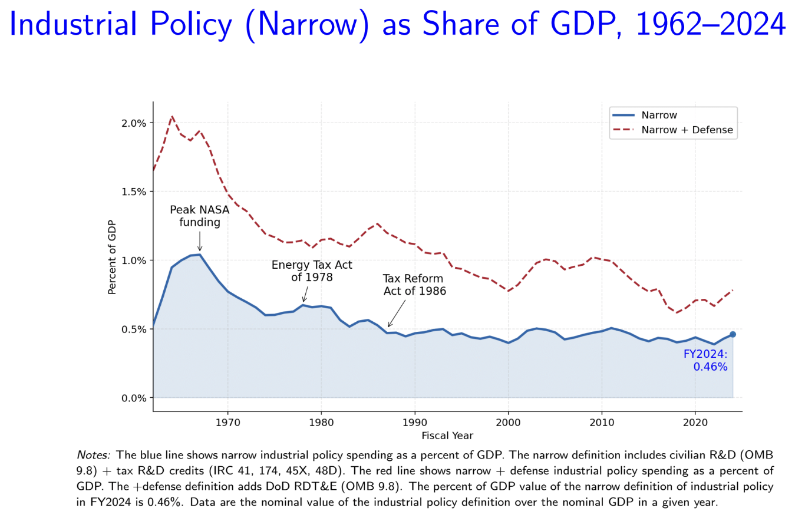

I am especially interested in projects that sit at the intersection of data, economics, and business strategy. One area I enjoy exploring is how quantitative analysis can help explain larger structural patterns, whether in public policy, market behavior, or business operations. In my research experience, I have examined U.S. industrial policy spending over multiple decades and contributed to literature review and data analysis related to sectoral growth and innovation. This type of work has made me more curious about how policy choices influence industries over time.
I am also drawn to fast-paced business environments where analysis can directly influence strategic decisions. My internship experience in global payments introduced me to questions related to user behavior, product experimentation, and operational efficiency across international markets. I found it exciting to translate data into recommendations that were not only technically sound, but also practical for business teams and end users.
Outside of work and school, I enjoy learning about venture capital, global market trends, and emerging industries. I also like detective novels and movies, traveling, visiting museums, and exploring new ideas from different cultural and business perspectives. These interests continue to shape the way I think about problem-solving, creativity, and growth.